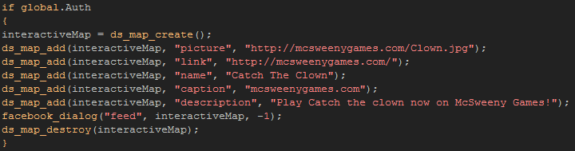

Tutorial
Page 5 of 8
Interactive Posts
An interactive post is one in which you ask the user to supply the message text (or other information as there are various things that you can request,
however that is out of the scope of this tutorial. For more information see
Dialogs Overview). The setup is very similar to that for a normal wall post and so you should do as you did previously and create a new object
called "obj_Interactive_Post" and assign it a sprite to act as a button. Next add a Left Mouse Button PRESSED event with the following
code:

As you can see, this is almost exactly the same as the previous post, but this time we are not including a message (as the user will be supplying that) and
we are using the function facebook_dialog(). The ds_map structure was explained in the previous section of the tutorial, so here we will give just a
brief overview of how the facebook_dialog() function works:
- The first argument to the function is the publishing graph path (see the section "Publishing"
here).
- The second argument id the ds_map that will be sent as json code to Facebook.
- The last argument can ho,ld a ds_map to collect any response json, or (as is the case) a -1 to indicate no response.
You can now test your game again and this time when you press the new button, you will see that a facebook prompt is shown that asks you to input a text message. Once
that is done you press "share" and the dialogue window will disappear, returning you to the game. Refreshing your Facebook page should now show the message.
Click on the Next button to go to the next page of the tutorial.